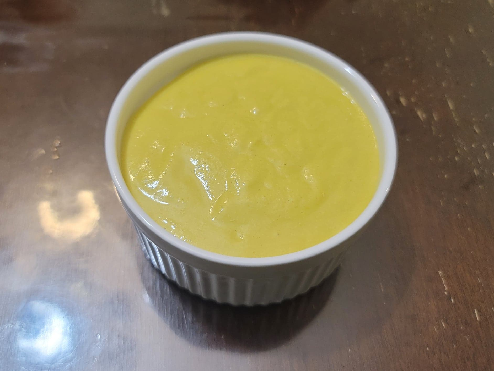

Ají Amarillo Sauce

Ingredients:
- 1 Ají amarillo, or 2 tbsp Ají amarillo paste
- 1/3 cup Queso fresco
- 1/4 Canola oil
- 1 large clove Garlic
- 3 tbsp Lime juice
- 1/2 tsp Huacatay paste
- 1/8 tsp Sugar
- Black pepper, to taste
Instructions:
- Combine all the ingredients into a blender or food processor. Blend until smooth. Serve as a dipping sauce.